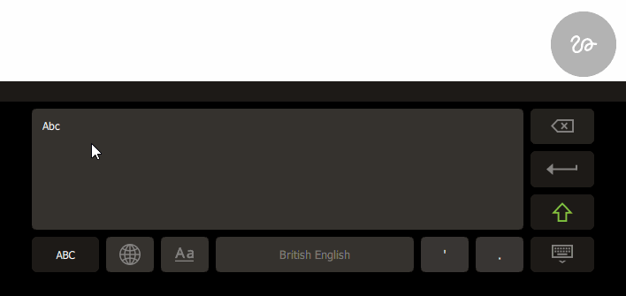

Handwriting Recognition
Qt Virtual Keyboard supports handwriting recognition through open source and commercially-licensed engines.

There are two modes in which to write: using the more compact handwriting panel (as shown above), or fullscreen.
For instructions on how to activate and use the handwriting input mode, see the User Guide.
For information about building Qt Virtual Keyboard with a particular handwriting engine, see Configuration Options.
Lipi Toolkit
Lipi Toolkit is an open source handwriting recognition engine.
Lipi Toolkit only supports handwriting written in the English language.
T9 Write
T9 Write is a commercial handwriting recognition engine.
T9 Write supports handwriting written in the following languages:
- Arabic
- Bulgarian
- Croatian
- Czech
- Danish
- Dutch
- English
- Estonian
- Finnish
- French
- German
- Greek
- Hebrew
- Hungarian
- Italian
- Japanese
- Korean
- Norwegian
- Persian/Farsi
- Polish
- Portugese
- Romanian
- Russian
- Serbian
- Simplified Chinese
- Spanish
- Swedish
- Traditional Chinese